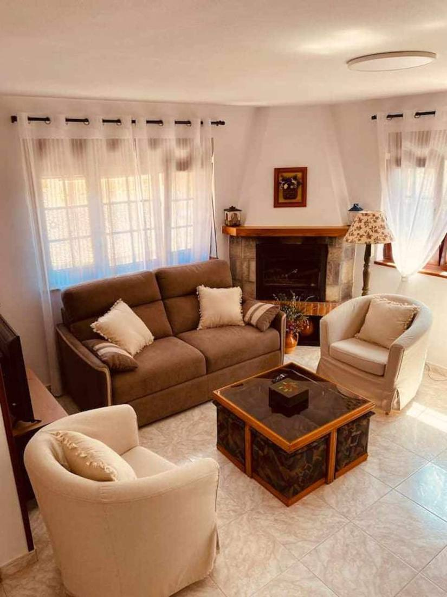
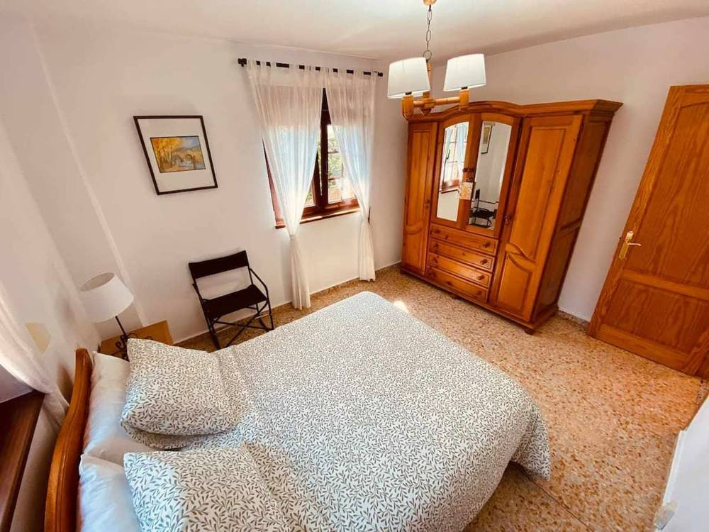

Casa entre el Mar y la Montaña
Cuatro dormitorios para compartir tus días entre la costa y el Sueve.
Imagina tus días aquí
Elige las fechas y cuántos vendréis. Hernán te confirmará disponibilidad y precio personalmente.
Explorar la vivienda¿Cuándo te gustaría venir?
Consulta disponibilidad y precio para tus fechas. Tu estancia quedará reservada cuando recibas la confirmación.
Conoce la casa
Abre cada apartado para descubrir sus espacios.
 01 / Una primera miradaLa casa en imágenesSalón · cocina · dormitorios · baños+
01 / Una primera miradaLa casa en imágenesSalón · cocina · dormitorios · baños+





La viviendaDónde dormirás4 dormitorios · 2 camas dobles · 4 individuales+
Dos dormitorios con cama doble y dos con dos camas individuales cada uno. Las habitaciones se reparten entre las dos plantas superiores, con un baño en cada planta.
La viviendaCocina y salónCocinar · compartir · descansar+
Salón-comedor con chimenea y televisor, cocina con frigorífico, horno, microondas, cafetera y tostadora, y una pequeña despensa. La casa dispone de wifi y calefacción.
La viviendaBaños y lavandería2 baños · lavadora · secadora+
Dos baños con bañera y bidé. La lavadora y la secadora están en la planta de garaje, con acceso independiente.
La viviendaAparcamientoEn la calle, cerca de la casa+
Puedes buscar aparcamiento en la calle, frente a la casa o en las inmediaciones, sujeto a disponibilidad. El garaje se utiliza como zona de lavandería y reunión; no se puede aparcar dentro.
Tu estanciaCaravia, entre la costa y el SuevePlaya · pueblos · naturaleza+
Las playas del Arenal de Morís y La Espasa y los paisajes del Sueve te esperan cerca de Caravia.
Descubre también Lastres, Colunga y el Museo del Jurásico de Asturias. Pregunta a Hernán por ideas para tu estancia.
Tu estanciaNormas y convivenciaAntes de llegar+
- Entrada desde las 16:00 y salida hasta las 12:00. Confirma tu hora de llegada con Hernán.
- No se permite fumar ni celebrar fiestas o eventos. Respeta el descanso de los vecinos; horario de silencio de 00:00 a 09:00.
- Mascotas bajo petición: consulta las condiciones y posibles suplementos antes de reservar.
- La vivienda tiene varias plantas comunicadas por escaleras. Tenlo en cuenta si viajas con personas con movilidad reducida.
Pregunta lo que quieras sobre esta casa.
Soy el asistente de esta vivienda. Te ayudo a conocer sus espacios y a preparar tus días en Caravia.
No compartas datos personales. Tus preguntas se envían a Google Gemini para responder. Privacidad.
Si necesitas una respuesta personal o un dato no confirmado, habla con Hernán por WhatsApp ↗
Registro turístico: VV-2869-AS